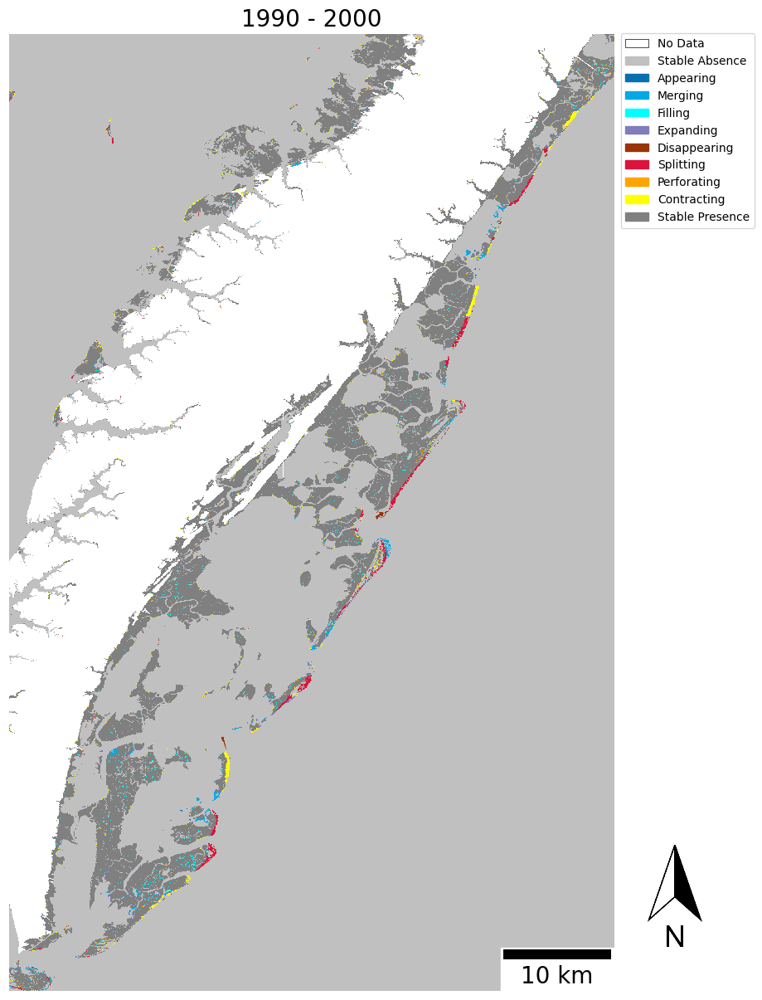
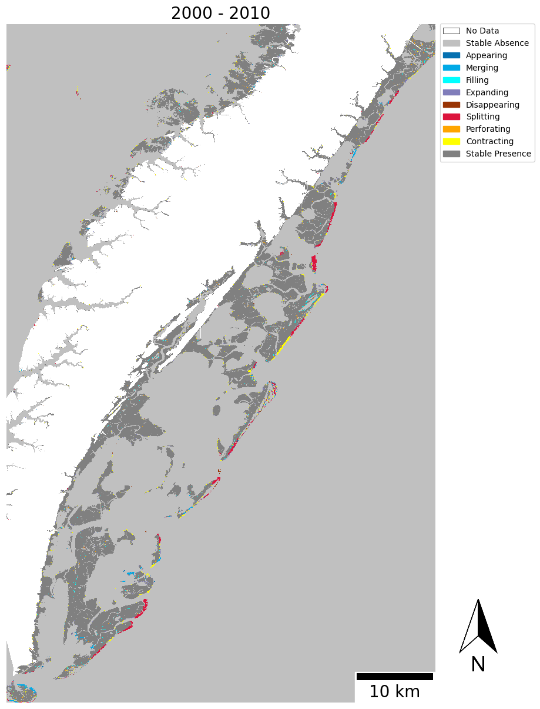
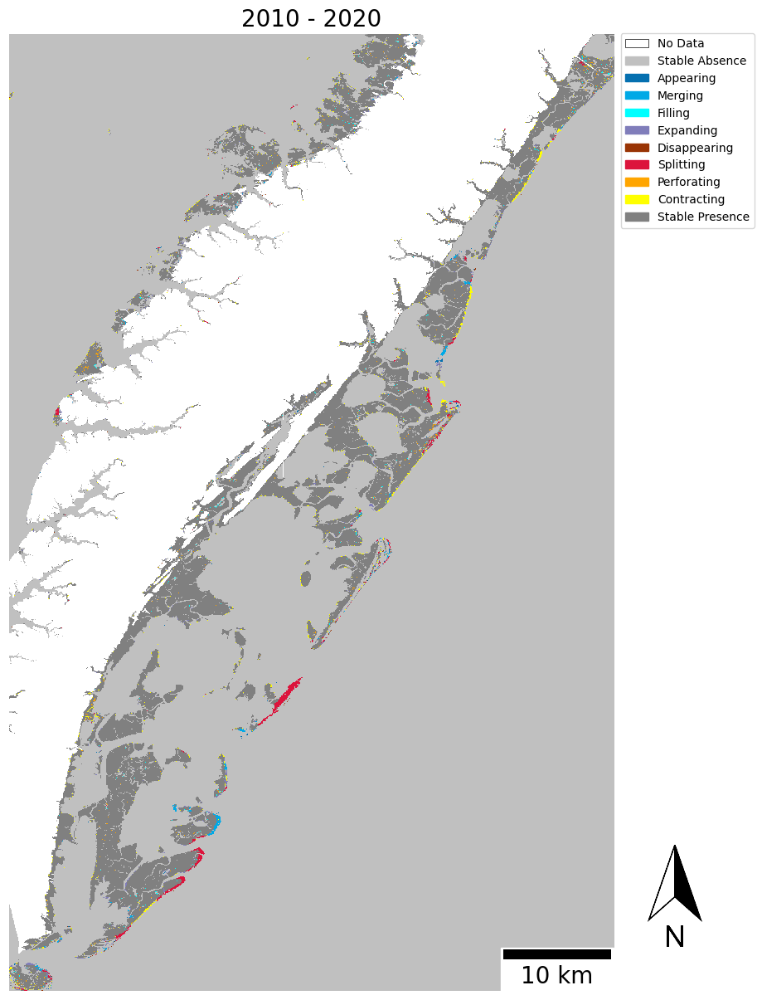
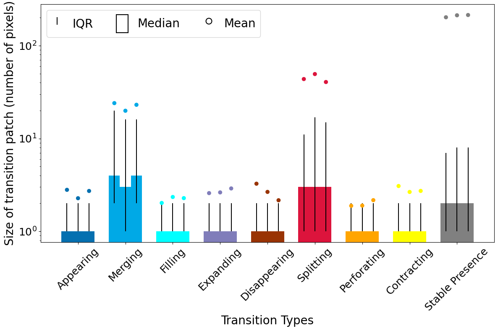
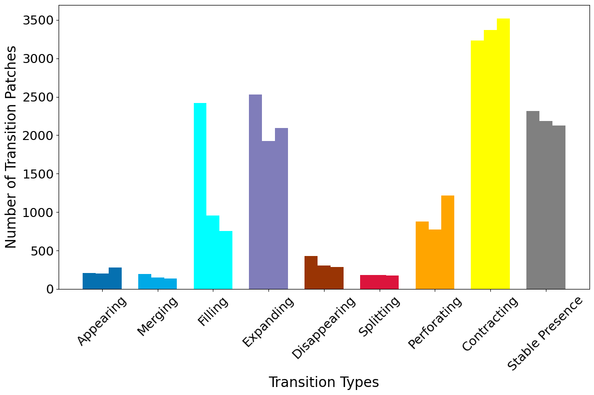
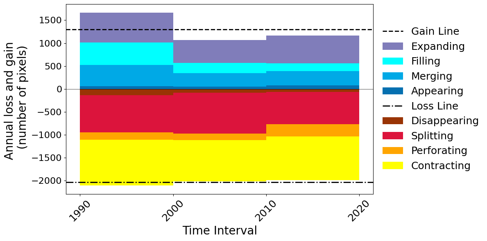
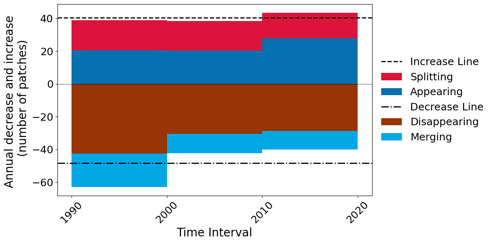

%%capture
%pip install -q "git+https://github.com/zay1996/DynamicPATCH.git@developer-branch"DynamicPATCH workshop
Presentation
In this tutorial you will use DynamicPATCH to characterize marsh transitions at the Virginia Coast Reserve (VCR) between 1985 and 2021.
By the end, you will be able to:
- install the DynamicPATCH developer branch;
- run a DynamicPATCH transition analysis; and
- interpret the transition map and four summary tables.
1. Install DynamicPATCH
Run the next cell once to install the current developer-branch directly from GitHub into this notebook’s Python environment.
If the installation reports that git is missing, install Git from https://git-scm.com/downloads or run conda install -c anaconda git in Anaconda Prompt, then run the cell again.
If your notebook asks you to restart the kernel after installation, restart it and continue with the next cell. You do not need to run the installation cell again.
import dynamicpatch
from pathlib import Path
import numpy as np
import pandas as pd2. Access the VCR data
The VCR raster data are included in the workshop GitHub repository. Run the setup cell below to clone the repository:
!git clone https://github.com/zay1996/Workshop_GIStimeseries.git
%cd Workshop_GIStimeseriesc:\OneDrive - Clark University\Desktop\Research\HarvardCGAworkshop\dynamicpatch-workshop\Workshop_GIStimeseriesCloning into 'Workshop_GIStimeseries'...
c:\Users\AiZhang\AppData\Local\miniconda3\envs\dynamic\lib\site-packages\IPython\core\magics\osm.py:417: UserWarning: This is now an optional IPython functionality, setting dhist requires you to install the `pickleshare` library.
self.shell.db['dhist'] = compress_dhist(dhist)[-100:]# Change only this line if you stored the VCR rasters somewhere else.
data_dir = Path("data")
input_files = sorted(data_dir.glob("*.tif"))
print("Input files:", [path.name for path in input_files])Input files: ['1990.tif', '2000.tif', '2010.tif', '2020.tif']You should see ['1990.tif', '2000.tif','2010.tif','2020.tif']. DynamicPATCH reads folder inputs in filename order, so the year list must follow the same temporal order.
VCR class values
| Value | Land-cover class |
|---|---|
| 1 | Trees |
| 2 | Marsh |
| 3 | Beach |
| 4 | Water |
| 255 | NoData |
This demonstration treats marsh (2) as presence and every other valid land-cover class as absence.
3. Run DynamicPATCH
The complete VCR analysis is one function call.
| Argument | Workshop value | Meaning |
|---|---|---|
workpath* |
data_dir |
Folder containing the input maps |
year* |
[1990, 2000, 2010, 2020] |
Years corresponding to the maps, in temporal order |
targ_pre* |
2 |
Pixel value treated as presence: marsh |
in_nodata |
255 |
Pixel value treated as NoData |
connectivity |
8 |
Queen connectivity; pixels may connect by an edge or corner |
study_area |
"VCR marsh" |
Label used in outputs |
unit |
"pixels" |
Report area in number of pixels |
res |
30 |
Raster cell size in meters |
export_map |
None |
Do not export a GeoTIFF during this run |
* These arguments are mandatory.
Other useful options from the package are:
| Argument | Purpose |
|---|---|
unit |
Use "pixels", "sqm2", "km2", or "Default" |
log_scale |
Control the logarithmic patch-size chart; the current version supports log scale |
width |
Change the width of bars in the result charts |
rotation |
Rotate year labels in stacked bar charts |
export_map |
Supply an output prefix without .tif, or use None to skip export |
results = dynamicpatch.run_dynamicpatch(
workpath=str(data_dir),
year=[1990, 2000, 2010, 2020],
targ_pre=2,
in_nodata=255,
connectivity=8,
study_area="VCR marsh",
unit="pixels",
res=30,
export_map=None,
)data loaded
Running Transition Analysis on time interval 0
Running Transition Analysis on time interval 1
Running Transition Analysis on time interval 2
areaunit = pixels,size_map = 9,res = 30
width is 0.2333333333333333 3
width is 0.2333333333333333 3c:\Users\AiZhang\AppData\Local\miniconda3\envs\dynamic\lib\site-packages\dynamicpatch\create_charts.py:243: UserWarning: Attempt to set non-positive ylim on a log-scaled axis will be ignored.
ax.set_ylim(bottom=0)xlabelsize 18 3
['1990' '2000' '2010' '2020']






DynamicPATCH displays five figures:
- the spatial transition-pattern map;
- the distribution of transition-patch sizes;
- the number of transition patches by type;
- gross area gain and loss; and
- gross increase and decrease in patch count.
The function also returns the underlying map and tables so you can inspect or reuse them.
list(results.keys())['pattern', 'patch_size', 'patch_num', 'gainloss', 'increase_decrease']4. Read the four summary tables
Patch sizes
patch_size contains patch-size information for every transition type and time interval. Use it to compare the typical size and variability of appearing, merging, filling, expanding, disappearing, splitting, perforating, and contracting patches.
results["patch_size"]| year | Stable Absence | Appearing | Merging | Filling | Expanding | Disappearing | Splitting | Perforating | Contracting | Stable Presence | |
|---|---|---|---|---|---|---|---|---|---|---|---|
| 0 | 1990-2000 | 2.0 | 1.0 | 4.0 | 1.0 | 1.0 | 1.0 | 3.0 | 1.0 | 1.0 | 2.0 |
| 1 | 2000-2010 | 2.0 | 1.0 | 3.0 | 1.0 | 1.0 | 1.0 | 3.0 | 1.0 | 1.0 | 2.0 |
| 2 | 2010-2020 | 2.0 | 1.0 | 4.0 | 1.0 | 1.0 | 1.0 | 3.0 | 1.0 | 1.0 | 2.0 |
Number of patches
patch_num counts the patches assigned to each transition type. A transition can occupy a large area because it has many patches, large patches, or both.
results["patch_num"]| year | Stable Absence | Appearing | Merging | Filling | Expanding | Disappearing | Splitting | Perforating | Contracting | Stable Presence | |
|---|---|---|---|---|---|---|---|---|---|---|---|
| 0 | 1990 | 3252 | 206 | 193 | 2419 | 2527 | 426 | 185 | 875 | 3230 | 2313 |
| 1 | 2000 | 3193 | 204 | 148 | 956 | 1922 | 306 | 181 | 772 | 3366 | 2185 |
| 2 | 2010 | 3279 | 278 | 134 | 757 | 2091 | 288 | 175 | 1218 | 3518 | 2127 |
Gross area gain and loss
gainloss reports the annual area associated with each transition type. The four gain types are appearing, merging, filling, and expanding. The four loss types are disappearing, splitting, perforating, and contracting.
results["gainloss"]| year | Appearing | Merging | Filling | Expanding | Disappearing | Splitting | Perforating | Contracting | |
|---|---|---|---|---|---|---|---|---|---|
| 0 | 1990 | 57.7 | 464.4 | 489.4 | 652.4 | -138.9 | -808.6 | -164.9 | -994.2 |
| 1 | 2000 | 46.4 | 294.7 | 224.2 | 505.0 | -81.4 | -895.5 | -146.2 | -894.3 |
| 2 | 2010 | 75.7 | 309.3 | 172.6 | 606.2 | -62.3 | -710.7 | -264.0 | -959.4 |
Gross increase and decrease in patch count
increase_decrease reports how appearing and splitting increase patch count, while disappearing and merging decrease patch count. These gross changes can be much larger than the net change.
results["increase_decrease"]| year | Disappearing | Appearing | Splitting | Merging | |
|---|---|---|---|---|---|
| 0 | 1990 | -426.0 | 206.0 | 184.0 | -203.0 |
| 1 | 2000 | -306.0 | 204.0 | 181.0 | -117.0 |
| 2 | 2010 | -288.0 | 278.0 | 156.0 | -114.0 |
5. Read the results together
Use the five outputs as complementary evidence:
patternanswers where each transition occurred.patch_sizeshows whether transitions occurred in small or large patches.patch_numshows the patch count for each transition type.gainlossquantifies gross change in area.increase_decreasequantifies gross change in patch number.
6. Optional: export the transition map
To save a GeoTIFF, rerun the analysis with export_map set to an output path prefix. Do not include the .tif extension.
output_prefix = Path("output/VCR_marsh_transition")
output_prefix.parent.mkdir(exist_ok=True)
# In run_dynamicpatch, replace export_map=None with:
export_map=str(output_prefix)The exported file will be output/VCR_marsh_transition.tif.
7. Use your own categorical maps
For another dataset, change the input folder and the dataset-specific values below:
data_dir = Path("path/to/your/maps")
years = [2000, 2010, 2020] # list of years
targ_pres = 1 # presence value
nodata_val = 255 # no data value
res = 30 # spatial resolution in meters Input maps should represent the same location, use the same coordinate system, cell size, and extent, and have filenames that sort into the same order as years. Choose connectivity=8 for queen connectivity or connectivity=4 for rook connectivity.
The current developer branch recommends restarting the kernel before changing the input dataset or major parameters, then running the notebook again from the import cell.
Reference
DynamicPATCH developer branch: https://github.com/zay1996/DynamicPATCH/tree/developer-branch
Zhang, A., Pontius Jr, R. G., Bilintoh, T. M., Sangermano, F., & Rogan, J. (2025). DynamicPATCH: Method and software for spatially explicit dynamic patch transition characterization. Landscape Ecology, 40(7), 132. https://doi.org/10.1007/s10980-025-02120-1